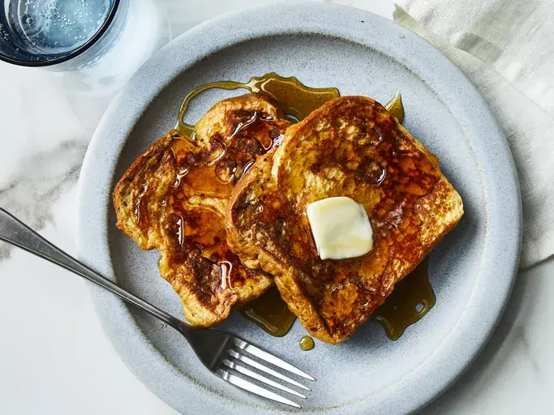

Toast

Description
Toast is a simple breakfast dish made by browning slices of bread in a
toaster or on a skillet. It's often served with butter, jam, or other
spreads and can be enjoyed as a quick and easy meal.
Ingredients
- 2 slices of bread
- Butter
- jam
- other spreads (optional)
Steps
- Place bread slices in a toaster and toast until golden brown.
- Spread butter, jam, or your preferred topping on the toast.
- Serve warm.